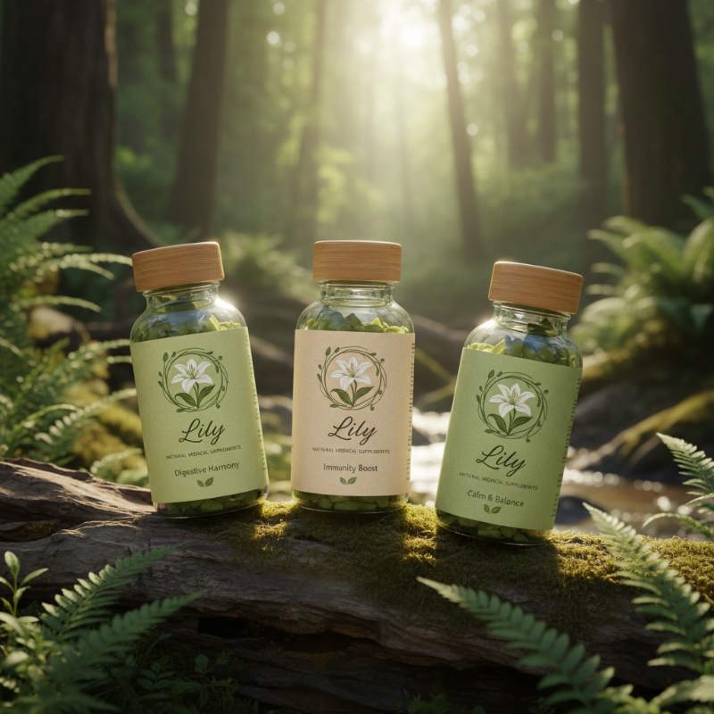

Welcome to Lily — Pure Nature, True Wellness
Your Journey to Natural Health Starts Here.
At Lily Natural Supplement , we believe that wellness should feel simple, honest, and deeply connected to nature. Our products are crafted with carefully selected botanical ingredients, backed by thoughtful research, and designed to support your body’s natural balance.
Whether you're looking to boost your energy, strengthen your immunity, or nurture long-term vitality, Lily offers clean, effective supplements you can trust.
Why Choose Lily?
- 🌿100% Natural Ingredients
- ✨ Thoughtfully Crafted
- 💚 Wellness You Can Feel
- 🌎 Responsible & Sustainable
Our Promise
At Lily, we stand for transparency, quality, and care. No fillers. No artificial additives. Just nature’s best, delivered with integrity.
Explore Our Products
Discover supplements that support:- Energy & vitality
- Immune health
- Stress relief & mood balance
- Digestive wellness
- Beauty from within
Welcome to a Healthier You
Thank you for visiting Lily. We’re excited to be part of your wellness journey.Feel free to explore, learn, and find the natural support your body deserves.
